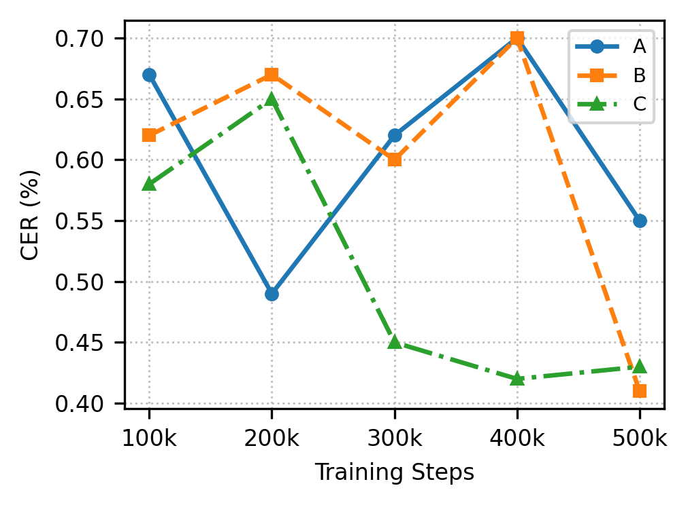
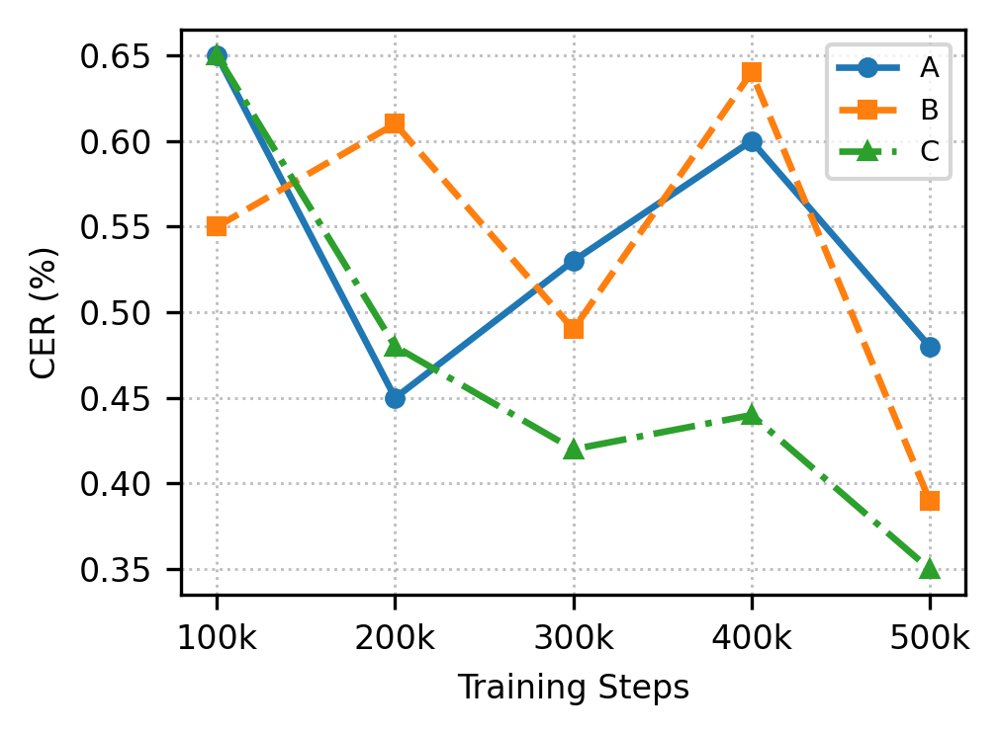
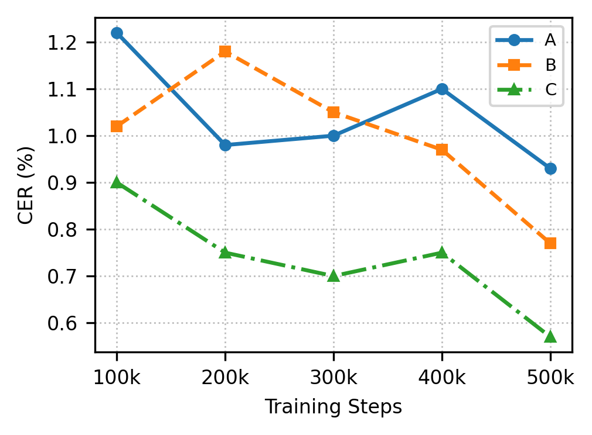
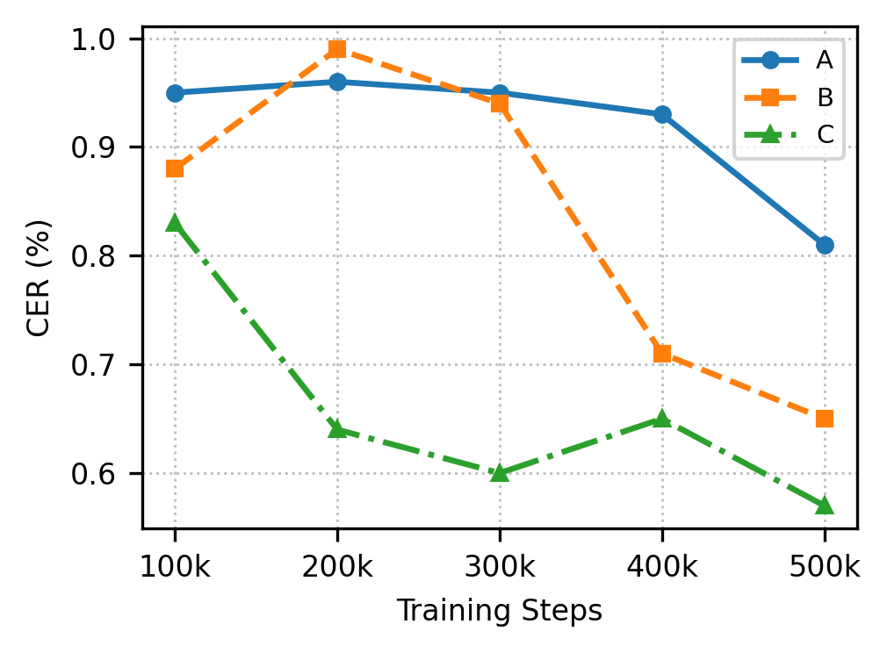

Learning Robust Text-to-Speech Trajectories via Augmentation-based Contrastive Flow Matching
Flow-matching-based text-to-speech (TTS) achieves strong zero-shot speaker similarity and naturalness, but may fail to read text correctly due to skip and repeat errors from imperfect text–speech alignment. We propose RobustSpeechFlow, a training strategy that improves alignment robustness by extending contrastive flow matching with TTS failure-mode negatives that simulate repeated or skipped pronunciations, words, and short phrases. The method requires no additional models or datasets and integrates into existing FM-TTS pipelines. On Seed-TTS-eval, RobustSpeechFlow reduces the WER from 1.44 in the baseline to 1.38 with only 0.06B parameters, demonstrating strong intelligibility in a compact FM-TTS model. On our newly constructed benchmark, it consistently improves intelligibility over the baseline; at NFE=24, it reduces English CER from 0.48% to 0.35% and Korean CER from 0.81% to 0.57%.
We evaluate on the public Seed-TTS-eval benchmark and our newly constructed ZERO500 multilingual benchmark.
| Model | Params | WER ↓ | SIM ↑ |
|---|---|---|---|
| MegaTTS3 | 0.5B | 2.79 | 0.77 |
| Seed-TTSDiT | — | 1.73 | 0.79 |
| DiTAR | 0.6B | 1.69 | 0.74 |
| MiniMax-Speech | — | 1.65 | 0.69 |
| F5-TTS | 0.3B | 2.00 | 0.67 |
| CosyVoice3 | 1.5B | 2.22 | 0.72 |
| Spark-TTS | 0.5B | 3.14 | 0.57 |
| OpenAudio S1-Mini | 0.5B | 1.94 | 0.55 |
| IndexTTS2 | 1.5B | 2.23 | 0.71 |
| VibeVoice | 1.5B | 3.04 | 0.69 |
| VoxCPM-Emilia | 0.5B | 2.34 | 0.68 |
| VoxCPM | 0.5B | 1.85 | 0.73 |
| Baseline | 0.06B | 1.44 | 0.60 |
| ContrastiveFM | 0.06B | 1.41 | 0.60 |
| RobustSpeechFlow | 0.06B | 1.38 | 0.60 |
| Model | NFE | EN CER ↓ | EN WER ↓ | KO CER ↓ | KO WER ↓ |
|---|---|---|---|---|---|
| Baseline | 12 | 0.55 | 1.25 | 0.93 | 8.46 |
| Baseline | 24 | 0.48 | 1.18 | 0.81 | 8.40 |
| ContrastiveFM | 12 | 0.41 | 1.10 | 0.77 | 7.92 |
| ContrastiveFM | 24 | 0.39 | 1.06 | 0.65 | 7.72 |
| RobustSpeechFlow | 12 | 0.43 | 1.14 | 0.57 | 7.59 |
| RobustSpeechFlow | 24 | 0.35 | 1.03 | 0.57 | 7.45 |




CER (%) over training steps on ZERO500. RobustSpeechFlow shows consistent improvement, especially on Korean and at NFE=24 where it reaches the lowest final CER. Legend: A = Baseline, B = ContrastiveFM, C = RobustSpeechFlow.
RobustSpeechFlow constructs hard negatives by applying length-preserving repeat and skip augmentations to the ground-truth speech latent. Below we decode these augmented latents back to audio so you can hear what the model learns to avoid.
Compare synthesized speech across Baseline, ContrastiveFM, and RobustSpeechFlow. Each sample shows the ASR-transcribed text and WER/CER for objective comparison.
"Compressed Natural Gas is a domestic energy produced in Western parts of India."
"The rest of the money can be based on playing time."
"Babele is one of the most popular tourist destinations in the country."
All reference voices are in-the-wild recordings used exclusively for evaluation and are never included in model training data.
"Well, I kept rehearsing what to say, and it sounded fine in my head. Then I heard my own voice shake, and I panicked a little. Give me a moment, and I’ll try again with a clearer, calmer tone."
"The script sounds natural, but the rhythm drifts in the third sentence and feels rushed."
"Well, that was unexpectedly stressful today."
All reference voices are in-the-wild recordings used exclusively for evaluation and are never included in model training data.
"음, 빠르게 몇 가지 확인 질문만 드릴게요. 업데이트 이후에 문제가 시작됐는지, 아니면 아무 변화 없이 갑자기 생겼는지 기억나세요? 정확하지 않아도, 추정이라도 말해 주시면 원인 범위를 줄일 수 있습니다."
"음, 네 메시지는 다 읽었어. 지금 바로 답하면 또 말이 꼬일 것 같아, 그래서 잠깐만 숨 고르고 올게. 조금만 기다려 주면, 차분히 이야기하자."
"주소 변경은 출고 전까지만 가능하며, 이후에는 배송사로 문의해야 합니다."
We release ZERO500, a multilingual benchmark designed to stress alignment under diverse speaker, prosody, and text conditions. Each set contains 500 text prompts paired with 50 unique reference voices drawn from game, news, and conversational speech domains. Each reference voice is randomly paired with 10 sentences, and each pair is synthesized twice with different random seeds. All reference voices are in-the-wild recordings used exclusively for evaluation and are never included in model training data. Only text prompts are provided below; reference audio is not publicly released.
500 English text prompts covering diverse domains, phonetic challenges, rare words, and complex syntactic structures for robust TTS benchmarking.
Download ZERO500-en500 Korean text prompts with varied prosodic patterns, foreign loan words, and domain-diverse content for evaluating multilingual TTS robustness.
Download ZERO500-ko